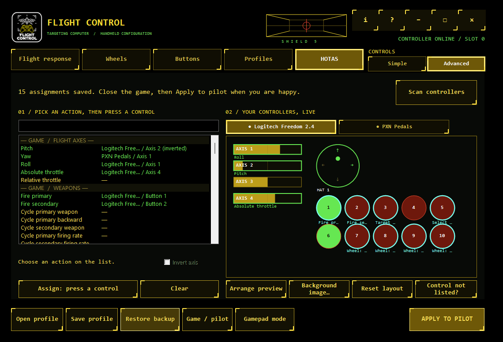
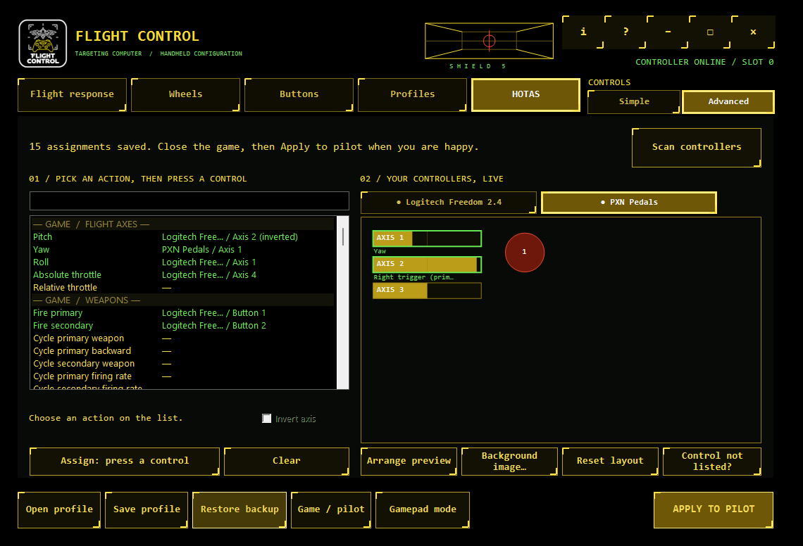
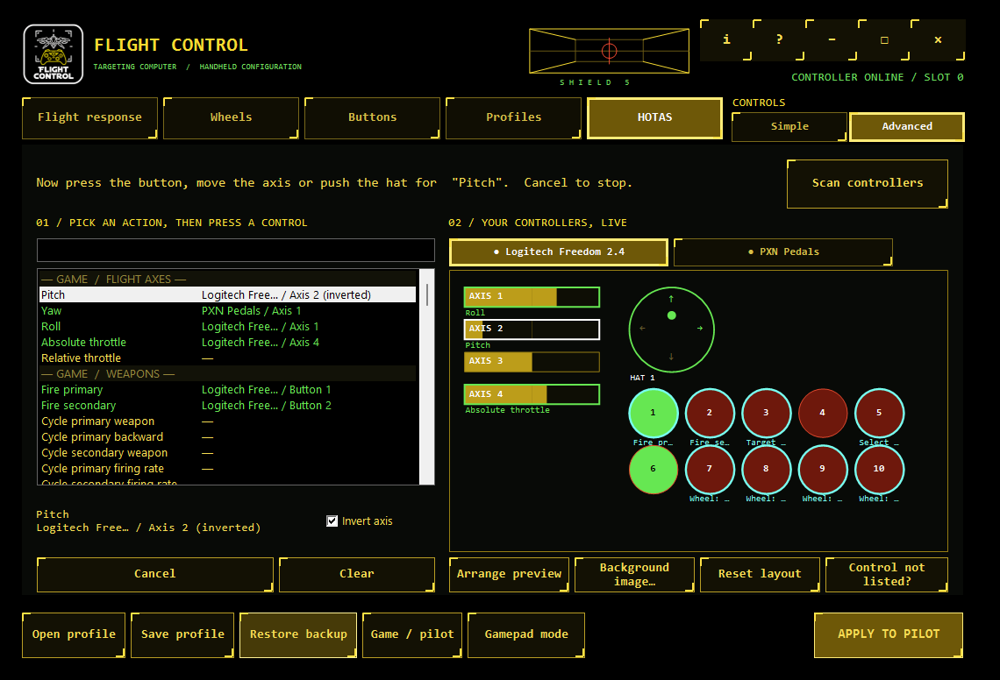
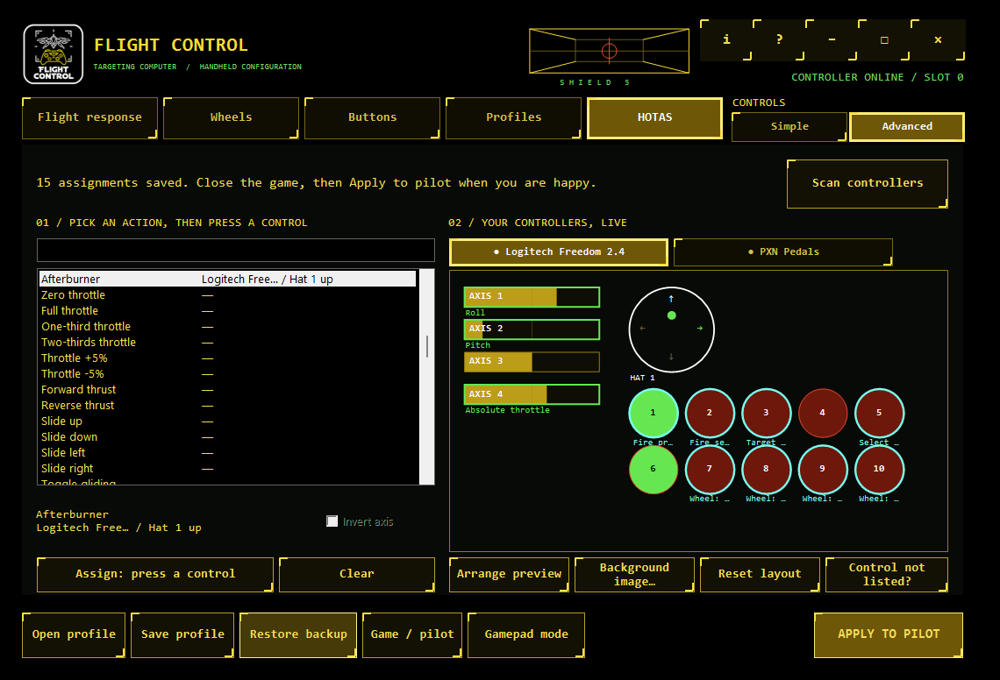
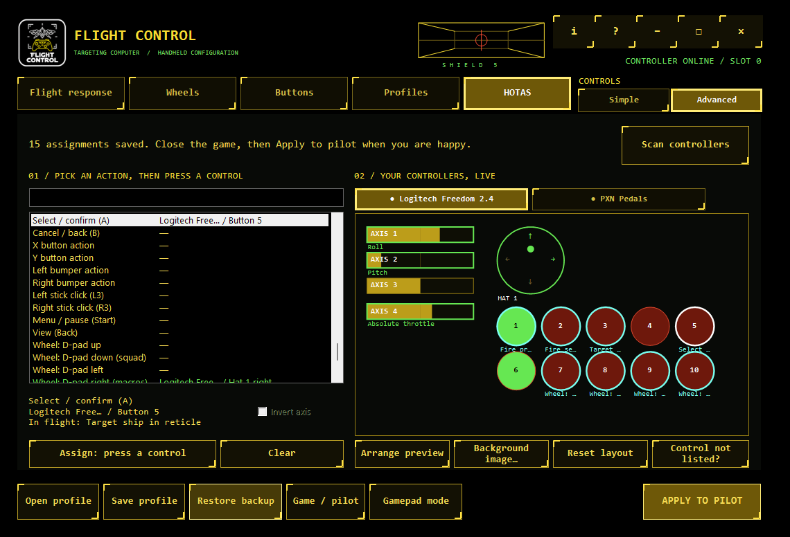
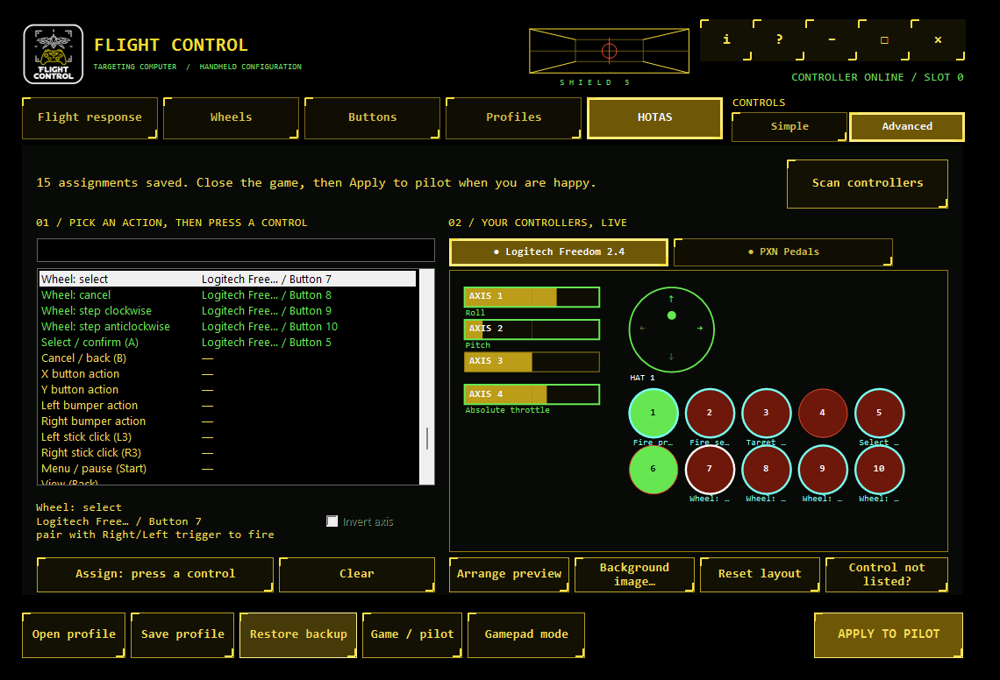
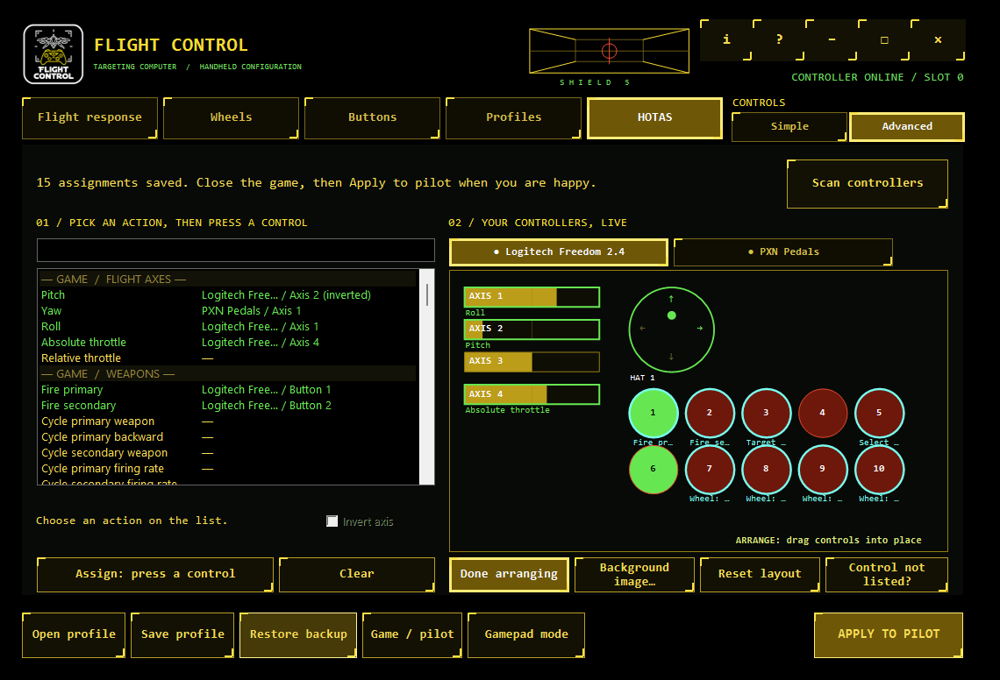

Flight Control: HOTAS guide (preview)
Fly Fate of the Galaxy 2 with a joystick, throttle and pedals, and keep Flight Control's command wheels. This guide covers the HOTAS tab in the Flight Control Console.
Preview. HOTAS support is new and has been tested with a Logitech Freedom 2.4 and a handheld gamepad. Hats, axes used as buttons, rotary encoders and some of the extra game actions have not been tried on many devices yet. Section 12 lists exactly what is and is not confirmed.
1. What you need
- Fate of the Galaxy 2.0.2, installed through Flight Control (MyMod). Fate of the Galaxy 1.1.x (classic) does not support HOTAS yet.
- Windows 64-bit, and the Flight Control Console and launcher from this build.
- Controls: Advanced. HOTAS is an advanced feature, so its tab is greyed out and cannot be clicked until the Controls switch is set to Advanced.
- Any joystick, throttle, pedals or button box that the game's own engine can see. If the game cannot see a control, neither can Flight Control (see section 9).
- Close the game before you press Apply.
2. Quick start
- Open the Flight Control Console and set Controls (right end of the tab row) to Advanced. The HOTAS tab is switched off in Simple. Then choose the HOTAS tab. It scans your controllers straight away.
- Move a control on each device. Its picture lights up, so you can tell which device is which.
- Pick an action on the left, for example Pitch, then move the stick. The assignment is made when the signal is clear.
- Repeat for the rest of your controls. Click Control not listed? if something does not show up.
- Close the game and press Apply to pilot. Launch the game with the Flight Control launcher.

Your work saves itself. You do not need to save a file to keep it.
3. The HOTAS tab
Controllers. Each connected device has a button along the top, with a dot that is filled while the device is connected. The picture below it shows live values: bars for axes, circles for buttons and a dial for each hat. A device you unplug stays in your profile and comes back when you plug it in again.

Actions. The list has two parts.
- Game actions are the game's own controls: flight axes, weapons, targeting, throttle and thrust, energy and shields, views, squad and mission commands.
- Flight Control actions are the command wheels and gamepad-style buttons: wheel D-pad directions, select and cancel, the face buttons, bumpers, stick clicks, triggers and sticks.
Type in the box above the list to filter it.
Assigning. Choose an action, then press the button, move the axis or push the hat on any device. Flight Control listens to all your devices at once and ignores axes that jitter on their own. You can also click a control in the picture to assign it without touching the hardware.

- Axes that you want as a button (a throttle lever used as a switch) work: move the axis towards the side you want.
- Invert axis flips an axis.
- Clear removes an assignment.
4. Two kinds of action
| Game actions | Flight Control actions | |
|---|---|---|
| What they are | The game's own bindings | The wheels, gestures and gamepad-style buttons |
| Where they run | In the game | In the Flight Control launcher, on a virtual gamepad |
| Limits | Four joystick devices; axes 1 to 8; buttons 1 to 128; only the first hat, four directions | None of those |
| Can share one input | No, one input has one job | Yes |
Use game actions for the ship's flying controls and for anything that always does the same thing. Use Flight Control actions for the wheels, and for any button that must do different things at different times.

5. One button, different jobs
A gamepad button does one thing in flight and another inside a wheel. You can do the same on a joystick.
- Wheel: select and Wheel: cancel act only while a wheel is open.
- Right trigger and Left trigger fire the primary and secondary weapons, and are paused while a wheel is open.
Assign one physical button to Right trigger and Wheel: select. In flight it fires. In a wheel it confirms and does not fire. Do the same with another button for Left trigger and Wheel: cancel.
A button that you hold through a selection is ignored in flight until you let go, so choosing an entry does not fire a shot as the wheel closes.
The face buttons, bumpers and stick clicks keep their flight action from the Buttons tab, shown under the list when you select one.

Why not a game action? The game does not pause its own bindings while a wheel is open, so a button bound to Fire primary in the game would fire while you used the wheel. The HOTAS tab warns you when one input drives both a game action and a Flight Control action.

6. Encoder wheels
A rotary encoder usually shows up as two buttons, one pulse per click in each direction. Assign Wheel: step clockwise and Wheel: step anticlockwise, turning the encoder in each direction when asked. While a wheel is open, each click moves the highlight one entry round the wheel and wraps at the ends. Wheel: select confirms.
Fast turning is queued, up to 16 steps, and played back one at a time. Two ordinary buttons work in place of an encoder.
7. Several devices
Use as many devices as you have: a stick, a throttle, pedals, a button box. Each device is a button along the top of the preview. Identical devices without serial numbers (two of the same pedals) are told apart by the order Windows lists them. Game actions can use up to four devices. Flight Control actions can use any number.
You can use a gamepad and a HOTAS at the same time. The HOTAS is layered over the gamepad in the launcher.
8. The preview
- Arrange preview lets you drag each control to where it is on your real device.
- Background image adds a picture of your device behind the controls. The picture stays on your PC and is never saved into a shared profile.
- Reset layout returns to the automatic arrangement.

9. When a control is missing
Press Control not listed? and use the control. If it lights up, it is listed and ready to assign. If nothing happens, the game cannot see it either. Try another mode on the device, or set the control to a button in the manufacturer's software, then press Scan controllers.
10. Applying, backups and switching back
Apply to pilot writes your assignments for the selected pilot. Close the game first.
- Game actions are written to Flight Control's control table, and your devices are set as the game's joysticks.
- Flight Control actions are written to a small map file that the launcher reads.
- Before anything is changed, a backup is made. Restore backup puts back exactly what the last Apply changed.
- If something that was installed is not in your profile any more, Apply tells you before it removes it.
Gamepad mode switches the game back to the gamepad: it removes the HOTAS bindings and the map, and puts the pilot's preset and joystick selection back as they were before you first applied HOTAS. Your HOTAS profile is kept, so Apply to pilot brings it straight back.
If you apply gamepad settings on the Flight response tab while HOTAS is applied, you are warned first, because that points the game's first joystick at the gamepad. If it happens, the HOTAS tab tells you the slots no longer match and Apply re-syncs them.
Applying only Flight Control actions never touches the pilot's preset, the control table or the game's joysticks, so a gamepad setup keeps working beside a HOTAS used only for wheels and buttons.
11. Sharing profiles
- Save profile writes a
.fchotasfile. It contains your assignments, device names and layout. It does not contain device serial numbers or any picture path. - Open profile loads one. Anything personal is stripped, the file is checked, and your own profile is kept as a backup first.
- A shared profile matches your hardware by device model. For a different model, right-click a device button along the top and choose one of your own devices to use in its place.
- Wheel layouts, macros and button actions live in the Profiles tab and are shared separately. A HOTAS setup that relies on a button's quick-press action needs that profile too.
12. What is confirmed
Confirmed in the game: joystick axes and buttons as game actions, several devices at once, Flight Control wheels driven from a joystick, one button with different jobs by state.
Not yet confirmed on many devices: game actions on a hat, axes used as buttons, inverted axes, the extra game actions beyond fire, targeting and weapons, and rotary encoders. If one of these misbehaves, please report it (see below).
Not available: Fate of the Galaxy 1.1.x, hats other than the first for game actions, and diagonal hat directions for game actions (they work for Flight Control actions).
13. Troubleshooting
| What you see | What to do |
|---|---|
| "Select your FotG 2 installation first" | Use Game / pilot at the bottom and pick the game folder and a pilot. |
| A button fires while a wheel is open | That button is bound to a game action. Use Right trigger and Wheel: select instead (section 5). |
| "The game's joystick slots no longer match" | Press Apply to pilot again, with the game closed. |
| The picture is empty | Press Scan controllers. Plug in the device first. |
| Apply fails | The Console writes the details to console-error.log next to it. Send that with your report. |
| You want the gamepad back | Press Gamepad mode. |
14. Reporting a problem
Tell us which device, which control, what you assigned, and what happened. Include console-error.log if Apply failed. Send reports to dev@manictrashpanda.dev.